Réalisations
Developpement
Glixel
Glixel est un jeu que j'ai développé durant plus de 4 ans. Programmé en
JS
, cela m'a permis d'apprendre ce language.
En dehors du code, développer un jeu m'a appris l'autodiscipline, être capable de resté focus sur un seul projet pendant une longue période de temps.
De plus, en tant qu'autodidacte, j'ai apris à utilisé différents outils comme
Github
, l'importation de plugins, le debbug etc.
Glixel est un projet qui me tiens à coeur, et est encore en développement aujourd'hui dans le but de l'améliorer/corriger des soucis de gamedesign de la version présédente.
Il participe à la réalisation de mon rêve de devenir, un jour, développeuse de jeu indépendant.
- JS
- Projet personnel
- Graphismes
- Animations
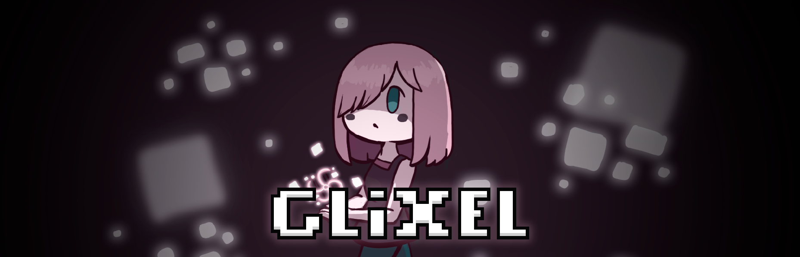
K-Hubs ↗
- TS
- Collaboratif
- SDK
- React
K-pick
K-Pick est une application interactive que j'ai développée la plateforme k-hubs. Entièrement faites en React et TypeScript, elle permet à un groupe de voter sur des dilemmes et de découvrir les préférences de chacun en temps réel. Ce projet m'a permis de me confronter directement aux exigences de l'intégration d'un SDK, notamment pour l'interaction en direct entre animateur et participants.
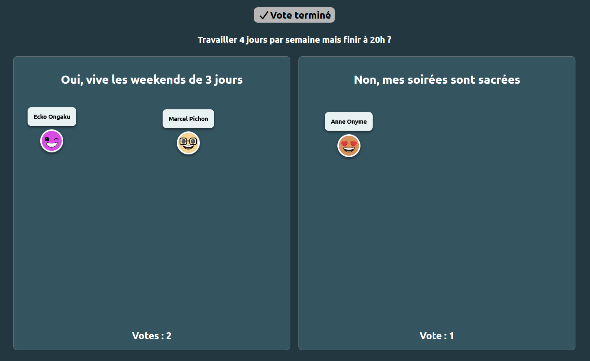
Kards
Également développée pour k-hubs, Kards est une application axée sur le micro-learning. Elle permet de générer des sessions d'apprentissage ludiques en combinant des cartes d'information (médias, textes) et des évaluations interactives. Le module gère de nombreuses mécaniques complexes comme des QCM, des curseurs dynamiques, du tri.... Donner vie à cette interface et développer le système de carte a été un défi vraiment stimulant à réaliser.
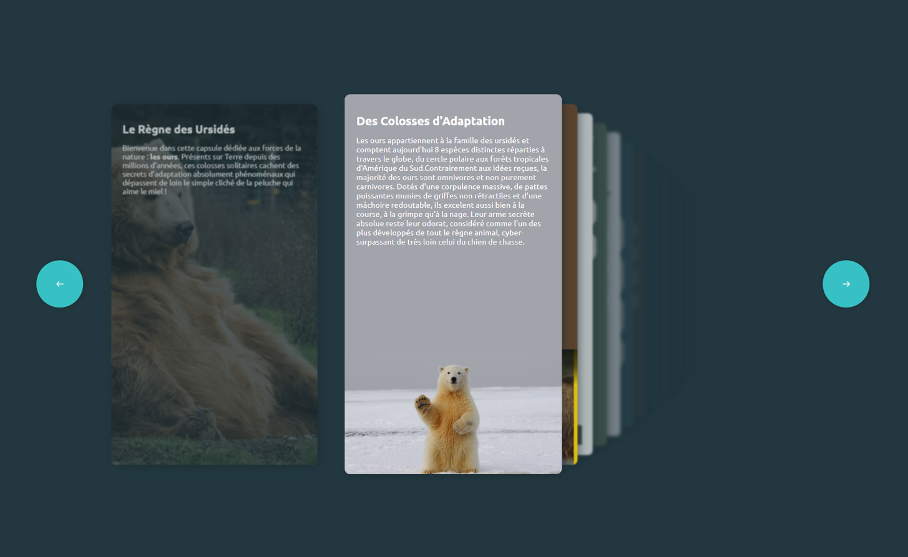
Graphisme
Productions graphiques et illustrations
J'ai toujours aimé dessiner et ai une sensibilité artistique. C'était l'une des raisons pour laquelle j'était allée en MMI pour ce mix entre développement, programmation et aspect visuel. Ici, vous avez quelques unes de mes créations, que ce soit des postes instagram réalisé quand je travaillais en agence web, ou bien des créations plus
- Professionel
- Gimp
- Poste Instagram
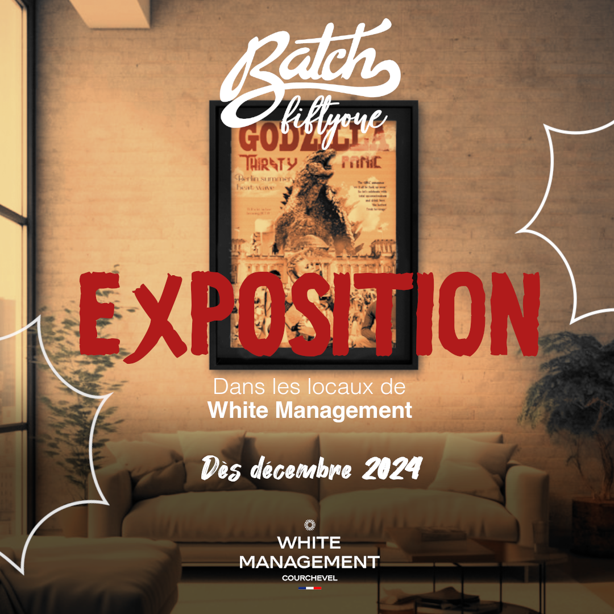
- Professionel
- Gimp
- Mockup
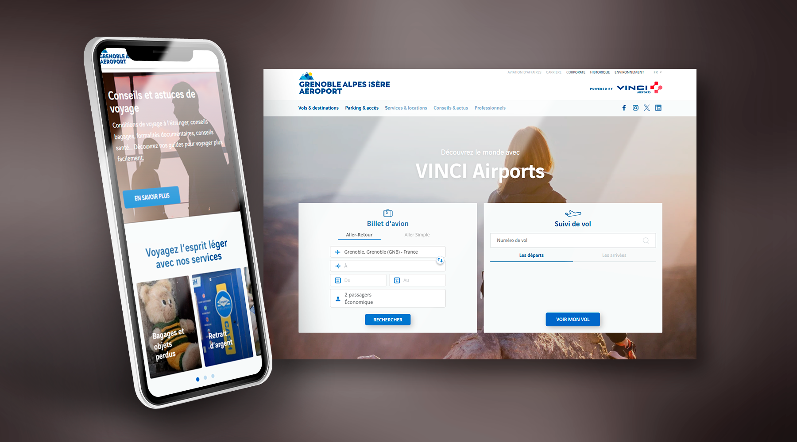
- Professionel
- Gimp
- Mockup
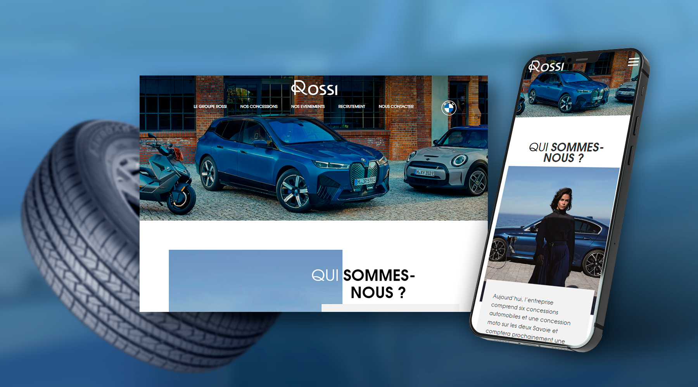
- Professionel
- Gimp
- Poste Instagram
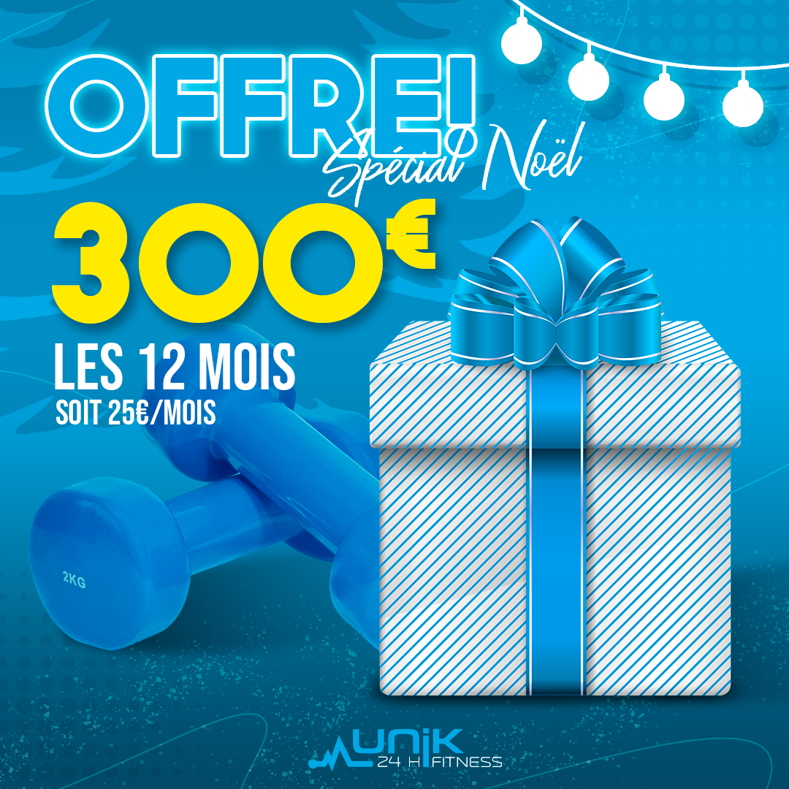
- Professionel
- Gimp
- Poste Instagram
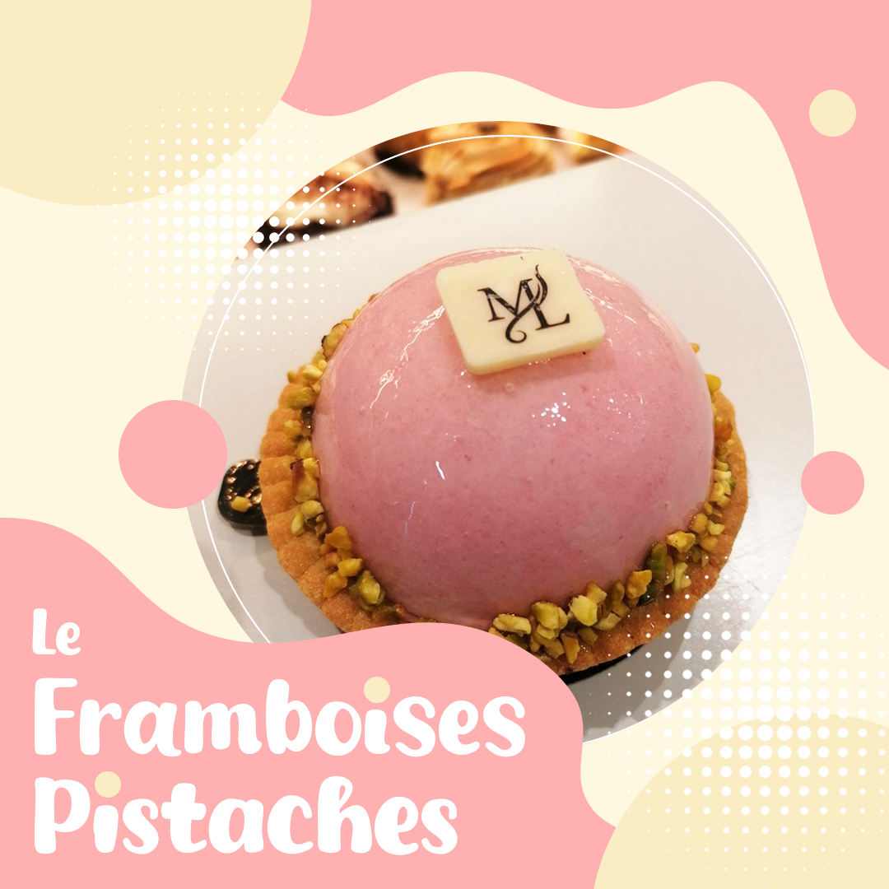
- Personnel
- Photoshop
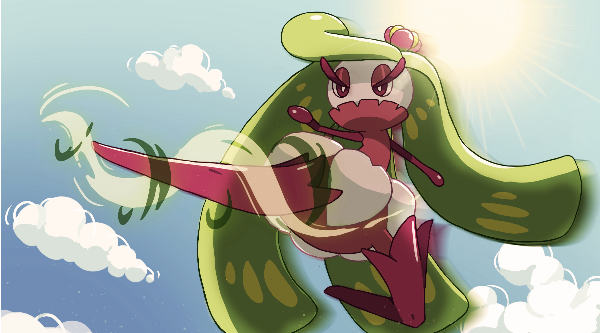
- Photoshop
- Personnel
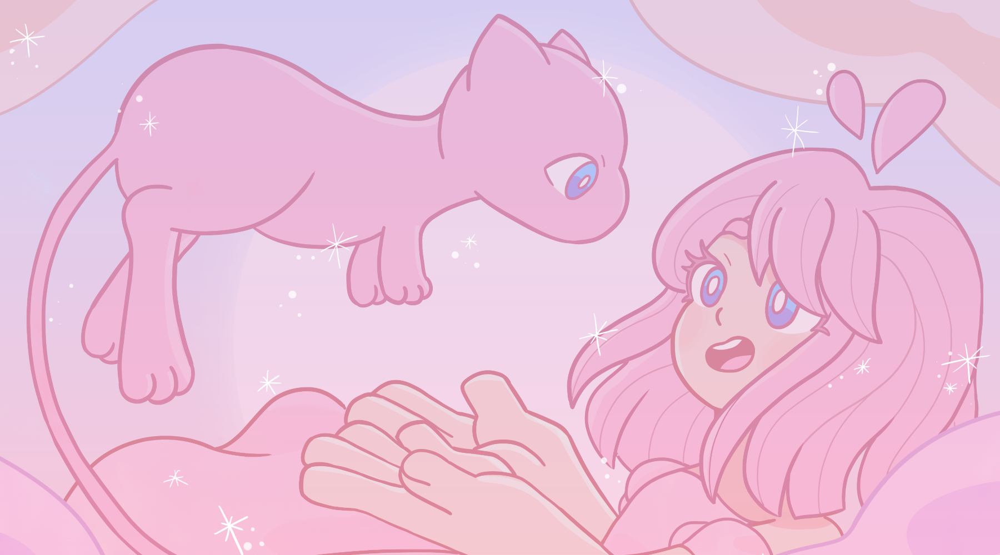
- Etudes
- Illustrator
- Packaging
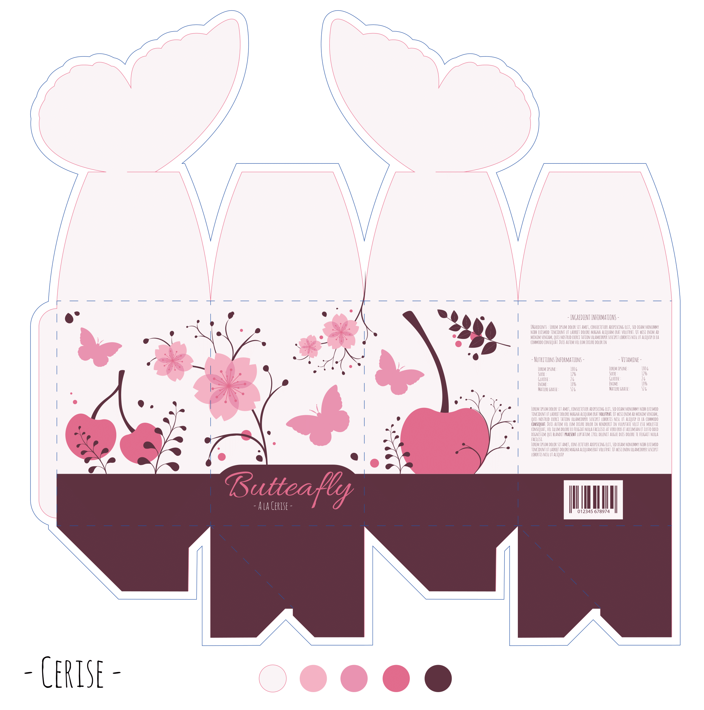
Design Web
Maquette web
Voici quelques unes des maquettes que j'ai fait lorsque je travaillais dans l'Agence Web cappuccino. Ces maquettes ont été réalisé dans le cadre de demande client. Pour cela j'ai utilisé Gimp et/ou photoshop. Je proposais plusieurs variations aux clients qui ont alors choisis leur préférée.
Voir site ↗
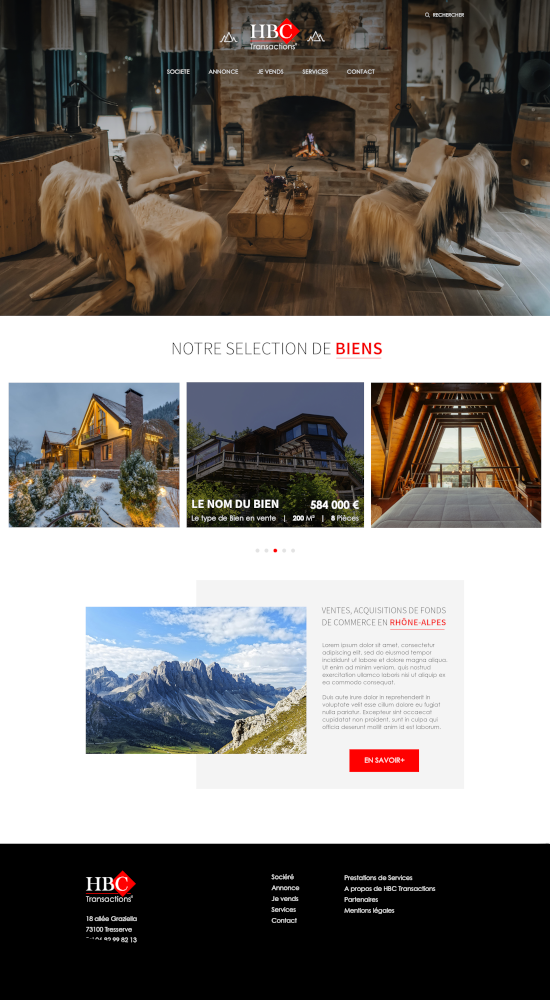
Voir site ↗
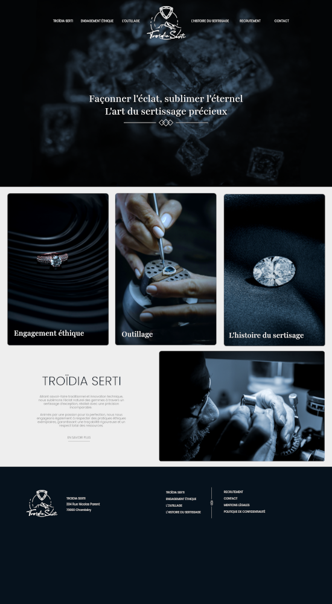
Voir site ↗
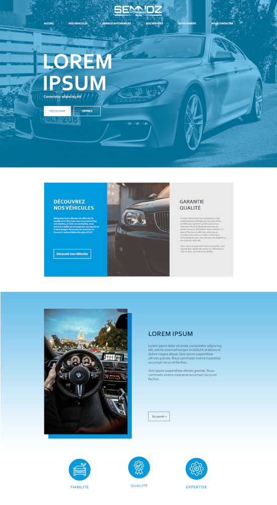
Voir site ↗
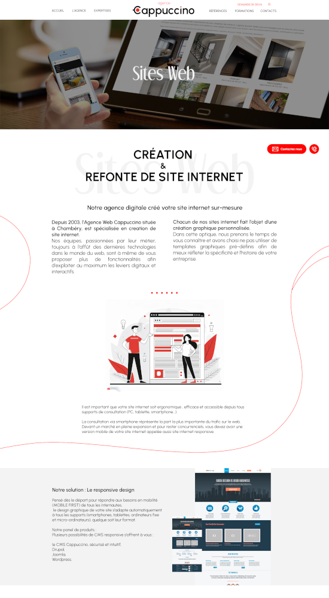
Audio Visuel
Animation et vidéo
Durant mes études en BUT Métiers du Multimédia et de l’Internet on nous a demandé de réalisé une vidéo intégrant de l'animation réalisé sous After Effect et Première Pro. Nous étions en équipe de 3 pour ce projet. Nous avons donc conceptualisé le story board, designé les personnages, plannifié les séances de tournage, tourné les plans, réalisé les animations, et enfin monté le tout. Voici donc la vidéo finale.